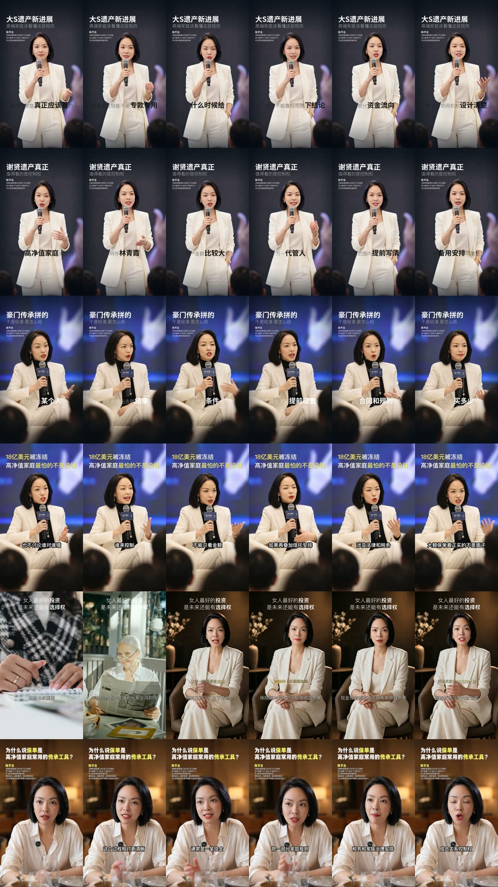
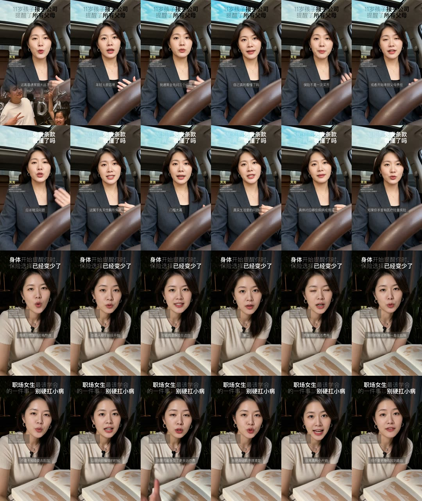
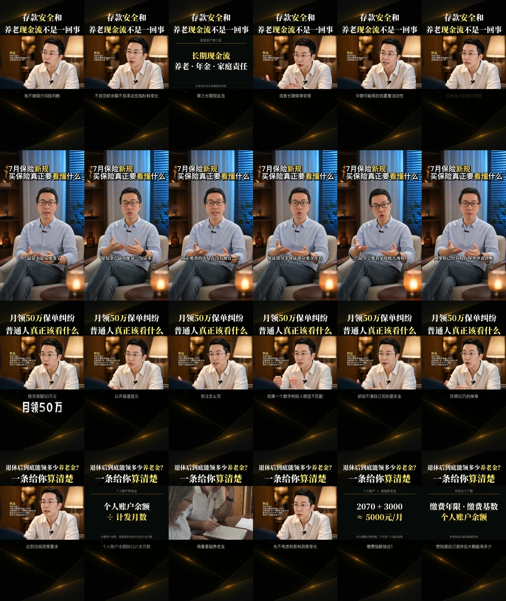

已经形成的能力
湖景坐播、黑金桌前、舞台站播与坐播、车内口播、室内桌前近景都出现连续复用。人物位置、景别和机位基本稳定，说明现有流程已经能够用母版支撑批量生产。
Weekly layout review / 2026 W30
上周22条可核验成片集中在9套画面母版。最大单一母版“湖景户外坐播”占36.4%，说明生产稳定性已经出现，但账号之间的场景区隔仍然不足。下一阶段不是继续增加字幕花样，而是补齐能长期归属于不同人物IP的场景母版。
本次只依据飞书表中可打开、可抽帧的成片附件判断画面。状态栏用于看制作推进，成片附件用于看画面母版，两者不混为一个口径。
湖景坐播、黑金桌前、舞台站播与坐播、车内口播、室内桌前近景都出现连续复用。人物位置、景别和机位基本稳定，说明现有流程已经能够用母版支撑批量生产。
荷花与迎春共用湖景母版，8条成片占全部样本36.4%。它能提升效率，却也让不同IP在第一眼上趋同；长期使用会削弱人物自己的视觉记忆。
画面母版由场景、人物位置、景别和机位共同决定。标题颜色、字幕、画中画、B-roll和信息卡属于包装层，不重复计数。
| 画面母版 | 场景与构图特征 | 使用IP | 次数 | 占比 |
|---|---|---|---|---|
| 湖景户外坐播 | 导演椅正面坐姿，中景至全身，湖面与绿植形成明亮纵深 | 荷花、迎春 | 8 | 36.4% |
| 黑金桌前近景 | 暖暗室内，人物偏侧近景，黑金信息页穿插叙述 | 释磊 | 3 | 13.6% |
| 舞台站播 | 人物全身站立持麦，冷色舞台与观众虚化 | 芊含 | 2 | 9.1% |
| 舞台坐播 | 活动现场椅坐，前景保留观众轮廓与现场光 | 芊含 | 2 | 9.1% |
| 车内口播 | 驾驶位中近景，方向盘作为固定前景锚点 | 芳芳 | 2 | 9.1% |
| 室内桌前近景 | 人物居中近景，桌面书本形成大面积前景 | 芳芳 | 2 | 9.1% |
| 暖调客厅坐播 | 人物正面椅坐，暖光空间，保留上半身与手势 | 芊含 | 1 | 4.5% |
| 暖调桌前特写 | 人物贴近桌面与镜头，生活化环境，景别更紧 | 芊含 | 1 | 4.5% |
| 暖光椅坐中景 | 完整坐姿，蓝色百叶与暖灯形成冷暖对比 | 释磊 | 1 | 4.5% |
73条记录的状态分布与日期分布如下。状态“完成”不等于附件一定可核验，因此母版统计只使用22条实际成片。
飞书表内73条记录
周日无新增，工作量明显前置
本周需要同时看三件事：原本打算对标谁、具体借哪一层、最后的成片有没有落到这条路线上。一个内部IP可以组合多个对标，但每个对标必须有明确分工。
专业解释型 + 观点脱口秀
从微易老周借“两条内容通道”：坐谈负责解释，舞台负责观点与势能；从横版财经/专家访谈类IP借黑金信息页、横向人物窗口和专业资料包装。
3条黑金桌前近景 + 1条暖光椅坐中景。口播解释与横版信息包装已经出现。
脱口秀和舞台表达尚未落地，现阶段更像“专业口播+信息卡”，还没有形成微易老周式的表演性双母版。
高净值财富传承主理人
“舞台权威 + 私享会解释”的高净值女性主理人。舞台建立经历和势能，暖调室内承接细致解释与信任。
2条舞台站播、2条舞台坐播、1条暖调客厅、1条暖调桌前。是5位IP中最接近双通道完整落地的一位。
舞台素材占比高，但“高净值女性”的精致身份主要靠白色套装支撑；室内固定母版和专属场景资产还不够稳定。
生活型保险顾问
从黄嘉祥借车内自然光与随手交流感；从陈葭怡借生活空间中的稳定近景、固定标题区与更亲近的表达距离。
2条车内口播 + 2条室内桌前近景，已经形成“通勤现场 + 居家解释”两套生活化母版。
两套都属于近景，生活感成立但职业空间不足；下一步需要一套中景行动画面证明顾问身份。
陪伴型养老／健康顾问

明亮柔光、自然景深、端正坐姿和女性顾问的亲和感成立；湖景本身承担“陪伴、松弛、长期主义”的情绪。
5条全部使用湖景户外坐播，部分加入全屏B-roll。生产稳定，但仍是一套场景反复使用。
现有资料无法把湖景场景严谨对应到一个明确账号级对标。需要补充最初参考链接，否则只能记为“户外生活方式类场景借鉴”。
理性决策型保险顾问
从董可人借稳定居中、重点词与信息解释效率；从港圈Lina借明亮专业女性气质。人物应比荷花更偏理性判断与方案决策。
3条湖景户外坐播，白色西装强化了职业感，但构图与荷花共用同一母版。
目标是理性顾问，落地却仍是陪伴型湖景。下一套应转向办公室或桌侧顾问构图，才能真正与荷花分开。
每张长图按视频逐行排列，同一行展示同一条视频的多个时间点。这样可以识别真实构图是否稳定，而不是只看一张封面。

4套母版｜上周场景最丰富

2套母版｜生活近景辨识度明确

2套母版｜包装体系最完整
1套主母版｜复用最稳定

1套主母版｜与荷花共用湖景场景
上周不少“变化”来自剪辑包装。它们有价值，但不能替代场景、人物位置和光线系统的建设。
拍摄前确定，决定账号的长期视觉记忆，也是本周复盘的主统计口径。
剪辑阶段确定，用于信息解释与节奏变化，不单独算作一套新母版。
每套新母版至少连续测试2条，才能判断是否可复用。一次性的精修画面不进入母版池。
桌侧45度机位，保留文件、书架或屏幕等职业证据。优先匹配迎春，强化专业决策感。
建立人物关系和视线方向，避免两人并排看镜头。用于专家、客户或搭档对谈。
行走、会面、看资料、进入工作场域，让职业身份通过动作出现，不只依赖坐着讲。
用真实空间和人物关系承接家庭风险议题，控制表演感，保留生活细节与空间层次。